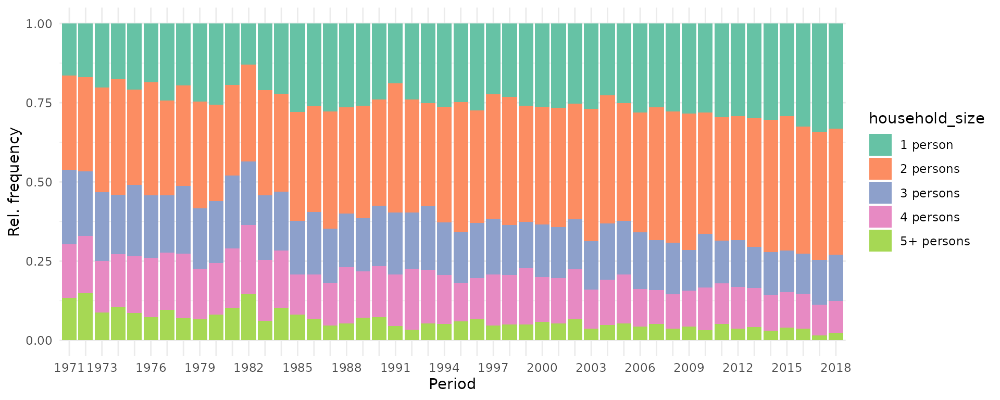
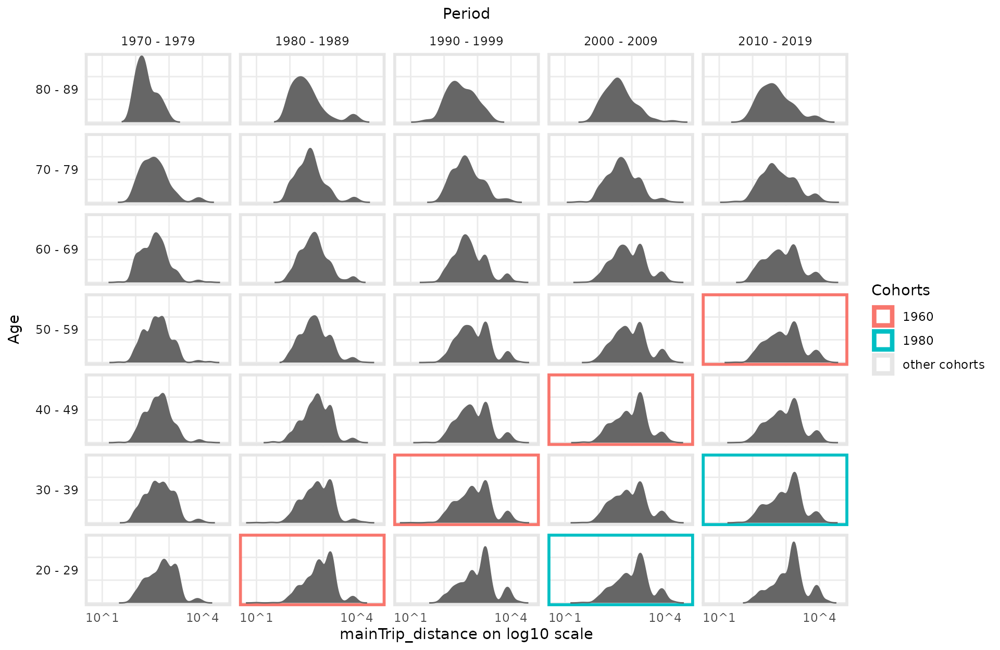
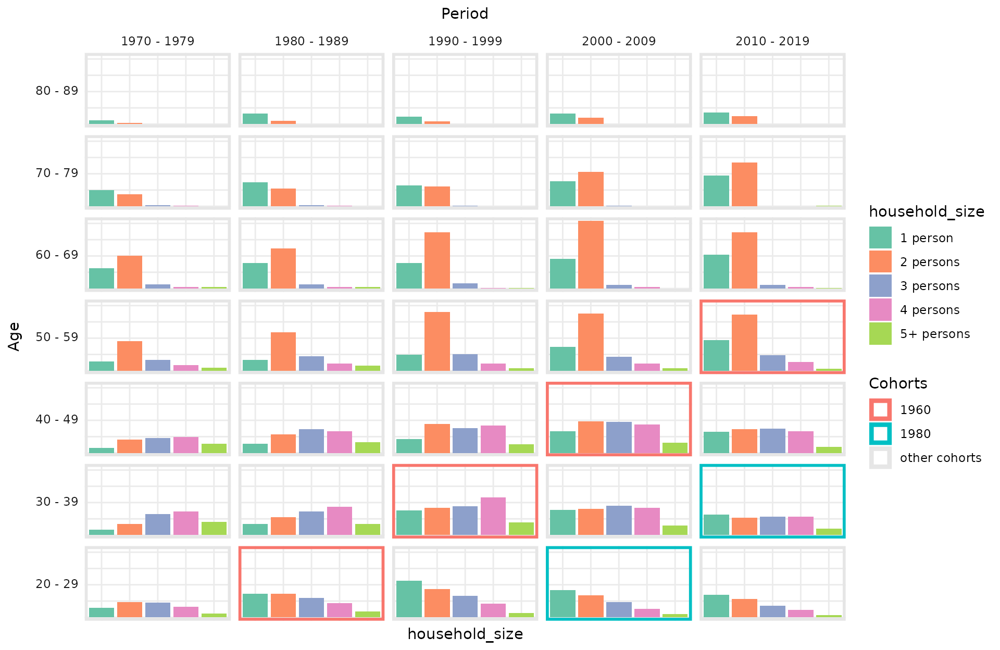
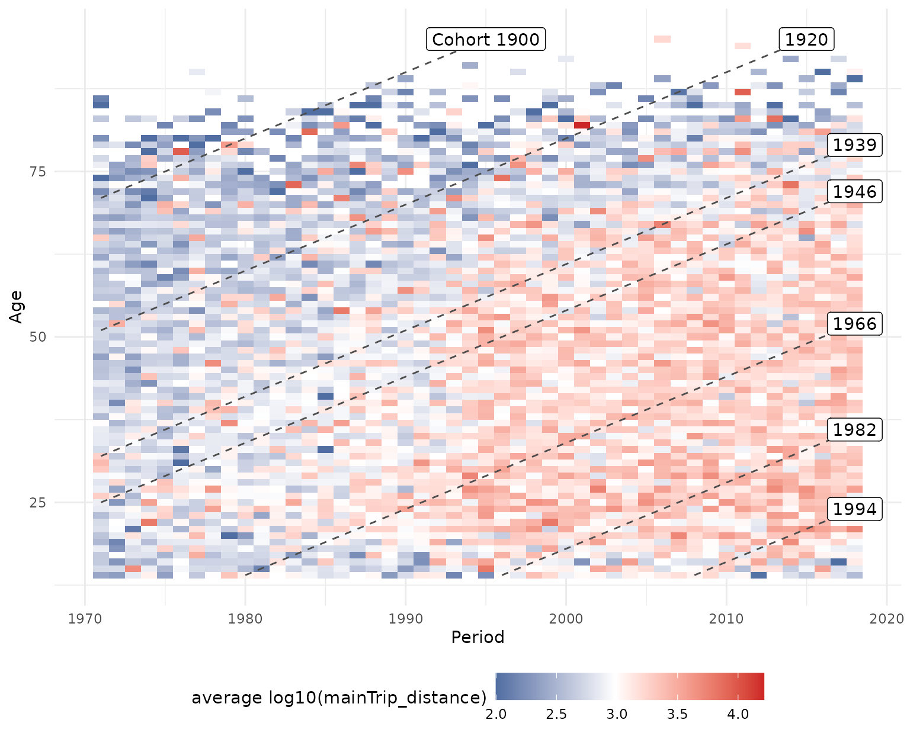
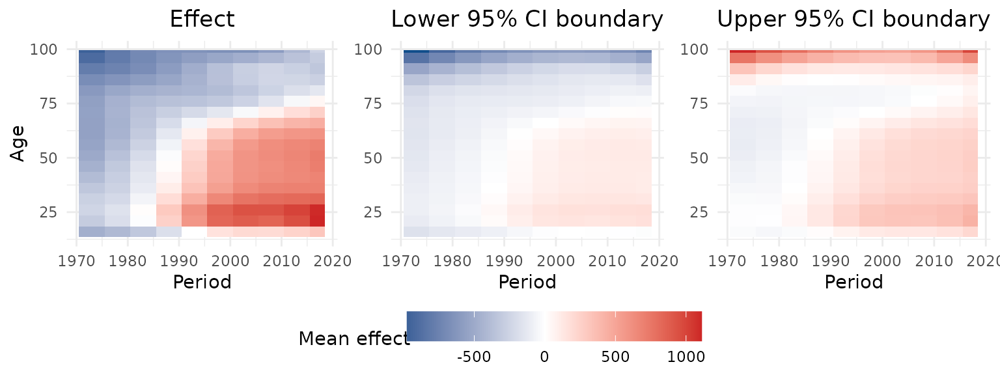
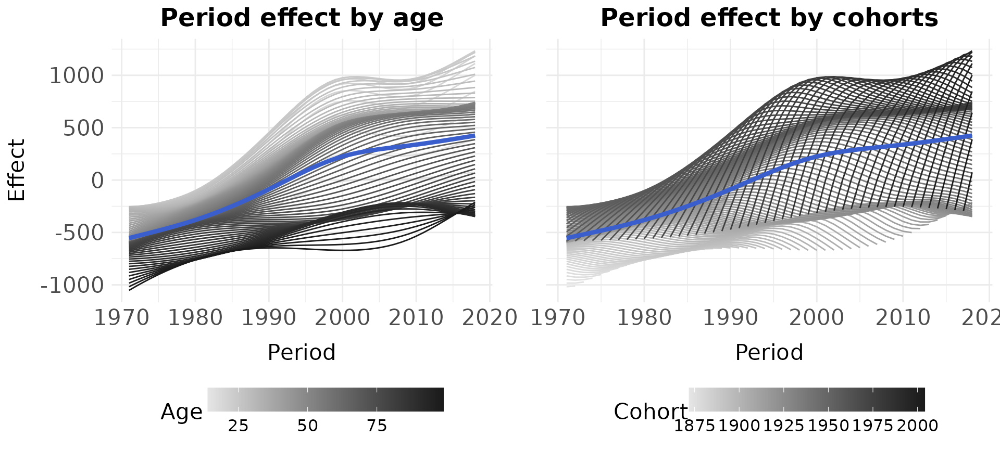
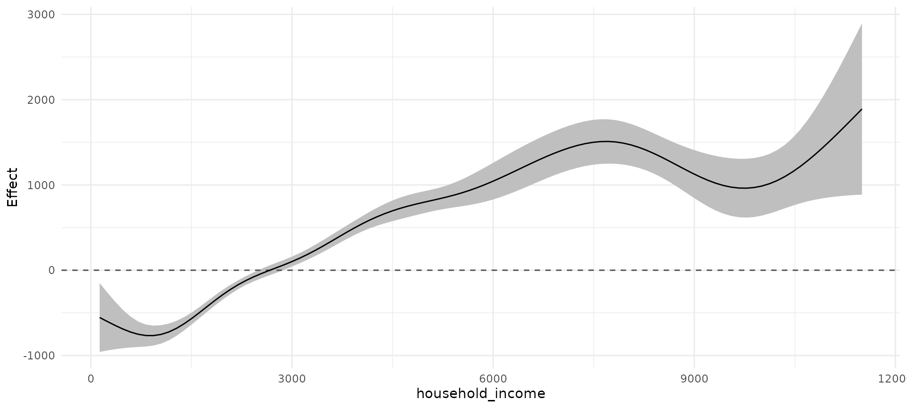

APC Analysis with APCtools
Alexander Bauer, Maximilian Weigert
13.January 2023
Source:vignettes/main_functionality.Rmd
main_functionality.RmdThis document gives an overview of the functionality provided by the
R package APCtools.
Age-Period-Cohort (APC) analysis is used to disentangle observed trends (e.g. of social, economic, medical or epidemiological data) to enable conclusions about the developments over three temporal dimensions:
- Age, representing the developments associated with chronological age over someones life cycle.
- Period, representing the developments over calendar time which affect all age groups simultaneously.
- Cohort, representing the developments observed over different birth cohorts and generations.
The critical challenge in APC analysis is that these main components are linearly dependent: \[ cohort = period - age \]
Accordingly, flexible methods and visualization techniques are needed
to properly disentagle observed temporal association structures. The
APCtools package comprises different methods that tackle
this problem and aims to cover all steps of an APC analysis. This
includes state-of-the-art descriptive visualizations as well as
visualization and summary functions based on the estimation of a
generalized additive regression model (GAM). The main functionalities of
the package are highlighted in the following.
For details on the statistical methodology see Weigert et al. (2021) or our corresponding research poster. The hexamaps (hexagonally binned heatmaps) are outlined in Jalal & Burke (2020).
Load relevant packages
Before we start, let’s load the relevant packages for the following analyses.
library(APCtools)
library(dplyr) # general data handling
library(mgcv) # estimation of generalized additive regression models (GAMs)
library(ggplot2) # data visualization
library(ggpubr) # arranging multiple ggplots in a grid with ggarrange()
# set the global theme of all plots
theme_set(theme_minimal())Example data
APC analyses require long-term panel or repeated cross-sectional
data. The package includes two exemplary datasets on the travel behavior
of German tourists (dataset travel) and the number of
unintentional drug overdose deaths in the United States
(drug_deaths). See the respective help pages
?travel and ?drug_deaths for details.
In the following, we will use the travel dataset to
investigate if travel distances of the main trip of German travelers
mainly change over the life cycle of a person (age effect), macro-level
developments like decreasing air travel prices in the last decades
(period effect) or the generational membership of a person, which is
shaped by similar socialization and historical experiences (cohort
effect).
data(travel)Descriptive visualizations
Different functions are available for descriptively visualizing observed structures. This includes plots for the marginal distribution of some variable of interest, 1D plots for the development of some variable over age, period or cohort, as well as density matrices that visualize the development over all temporal dimensions.
Marginal distribution of one variable
The marginal distribution of a variable can be visualized using
plot_density. Metric variables can be plotted using a
density plot or a boxplot, while categorical variables can be plotted
using a bar chart.
gg1 <- plot_density(dat = travel, y_var = "mainTrip_distance", log_scale = TRUE)
gg2 <- plot_density(dat = travel, y_var = "mainTrip_distance", log_scale = TRUE,
plot_type = "boxplot")
gg3 <- plot_density(dat = travel, y_var = "household_size")
ggpubr::ggarrange(gg1, gg2, gg3, nrow = 1)1D: One variable against age, period or cohort
Plotting the distribution of a variable against age, period or cohort
is possible with function plot_variable. The distribution
of metric and categorical variables is visualized using boxplots or line
charts (see argument plot_type) and bar charts,
respectively. The latter by default show relative frequencies, but can
be changed to show absolute numbers by specifying argument
geomBar_position = "stack".
plot_variable(dat = travel, y_var = "mainTrip_distance",
apc_dimension = "period", plot_type = "line", ylim = c(0,1000))
plot_variable(dat = travel, y_var = "household_size", apc_dimension = "period")
2D: Density matrices
To include all temporal dimensions in one plot, APCtools
contains function plot_densityMatrix. In Weigert et
al. (2021), this plot type was referred to as ridgeline matrix
when plotting multiple density plots for a metric variable. The basic
principle of a density matrix is to (i) visualize two of the temporal
dimensions on the x- and y-axis (specified using the argument
dimensions), s.t. the third temporal dimension is
represented on the diagonals of the matrix, and (ii) to categorize the
respective variables on the x- and y-axis in meaningful groups. The
function then creates a grid, where each cell contains the distribution
of the selected y_var variable in the respective
category.
By default, age and period are depicted on the x- and y-axis,
respectively, and cohort on the diagonals. The categorization is defined
by specifying two of the arguments age_groups,
period_groups and cohort_groups.
age_groups <- list(c(80,89),c(70,79),c(60,69),c(50,59),
c(40,49),c(30,39),c(20,29))
period_groups <- list(c(1970,1979),c(1980,1989),c(1990,1999),
c(2000,2009),c(2010,2019))
plot_densityMatrix(dat = travel,
y_var = "mainTrip_distance",
age_groups = age_groups,
period_groups = period_groups,
log_scale = TRUE)
To highlight the effect of the variable depicted on the diagonal
(here: cohort), different diagonals can be highlighted using argument
highlight_diagonals.
plot_densityMatrix(dat = travel,
y_var = "mainTrip_distance",
age_groups = age_groups,
period_groups = period_groups,
highlight_diagonals = list("born 1950 - 1959" = 8,
"born 1970 - 1979" = 10),
log_scale = TRUE)
For metric variables it is further possible to use a color scale for
the density function (arguments y_var_cat_breaks and
y_var_cat_labels) to highlight local developments over the
APC dimensions.
dist_cat_breaks <- c(1,500,1000,2000,6000,100000)
dist_cat_labels <- c("< 500 km","500 - 1,000 km", "1,000 - 2,000 km", "2,000 - 6,000 km", "> 6,000 km")
plot_densityMatrix(dat = travel,
y_var = "mainTrip_distance",
age_groups = age_groups,
period_groups = period_groups,
log_scale = TRUE,
y_var_cat_breaks = dist_cat_breaks,
y_var_cat_labels = dist_cat_labels,
highlight_diagonals = list("born 1950 - 1959" = 8,
"born 1970 - 1979" = 10),
legend_title = "Distance category")Alternatively to plotting a conditional density in each matrix cell,
metric variables can also be visualized using boxplots by specifying
plot_type = "boxplot". Categorical variables are
automatically plotted using conditional bar plots.
plot_densityMatrix(dat = travel,
y_var = "household_size",
age_groups = age_groups,
period_groups = period_groups,
highlight_diagonals = list("born 1950 - 1959" = 8,
"born 1970 - 1979" = 10))
2D: Heatmaps
Similar to density matrices, heatmaps simultaneously visualize all
three APC dimensions. Instead of individual distributions in separated
categories, however, a color scale is used to depict the mean value in a
specific region. When setting bin_heatmap = FALSE, the
function plot_APCheatmap shows the average observed values
of a metric variable for each observed combination of age and period
values (if dimensions = c("period","age")). The borders of
groups along the diagonal can be marked using argument
markLines_list.
plot_APCheatmap(dat = travel,
y_var = "mainTrip_distance",
y_var_logScale = TRUE,
bin_heatmap = FALSE,
markLines_list = list(cohort = c(1900,1920,1939,1946,
1966,1982,1994)))
By default, the heatmap is binned in five year blocks along the x-
and y-axis to focus on larger-scale developments. Note that the grid
used for binning can flexibly be defined with the argument
bin_heatmapGrid_list.
plot_APCheatmap(dat = travel,
y_var = "mainTrip_distance",
y_var_logScale = TRUE,
markLines_list = list(cohort = c(1900,1920,1939,1946,
1966,1982,1994)))2D: Hexamaps
As an alternative to classical heatmaps observed developments can
also be visualized using hexamaps, i.e. hexagonally binned
heatmaps with rotated axes to give all three APC dimensions similar
visual weight. This resolves the central problem of classical heatmaps
that developments along the diagonal dimension are visually much harder
to grasp than developments along the x- or y-axis. Function
plot_APChexamap can be called similarly to
plot_APCheatmap. Note, however, that hexamaps are currently
implemented using the base R plot functions and not based on
ggplot2.
plot_APChexamap(dat = travel,
y_var = "mainTrip_distance",
y_var_logScale = TRUE)Model-based analyses
After getting a descriptive overview of the data with the functions outlined above, an established approach to analyze APC structures in more detail is to use the semiparametric approach offered by generalized additive regression models (GAMs). This regression-based approach offers several benefits:
- Compared to alternative regression-based APC approaches it circumvents the issue of linear dependency of the APC dimensions by estimating a flexible two-dimensional tensor product surface.
- The model separates the underlying smooth effects of age, period and cohort from random variation in the data and allows for the subsequent visualization of marginal age, period and cohort effects.
- While the above heatmaps and hexamaps can only be used to visualize the observed distribution of metric variables, the regression-based approach also allows for estimating and plotting the mean structure in settings with a categorical response variable, for example by estimating a logistic regression model.
- The regression-based approach allows for accounting for further control variables in the model. E.g., when analyzing how travel distances developed over the last decades, each persons income can be included as a covariate in the model estimation to account for income differences between travelers in different decades.
For estimating a regression model we utilize the function
gam implemented in package mgcv. For further
methodological details see Weigert et al. (2021).
Let’s fit two GAM models, one without and one with further control
variables. See ?travel for an explanation of the used
variables. The tensor product surface is estimated with two marginal
P-spline bases with eight basis functions each.
# GAM without covariates
model_pure <- gam(mainTrip_distance ~ te(age, period, bs = "ps", k = c(8,8)),
data = travel)
# GAM including covariates
model_cov <- gam(mainTrip_distance ~ te(age, period, bs = "ps", k = c(8,8)) +
residence_region + household_size + s(household_income),
data = travel)
# create a named list of the two models, useful for some functions
model_list <- list("pure model" = model_pure,
"covariate model" = model_cov)Heatmaps
Similary to the descriptive visualization outlined above, the tensor
product surface estimated with the regression model can be created with
plot_APCheatmap, by passing the model object as argument
model to the function.
plot_APCheatmap(dat = travel,
model = model_pure)
Hexamaps
The same applies to the hexamaps. By calling
plot_APChexamap and specifying the model
argument, a hexamap of the estimated mean structure is created.
plot_APChexamap(dat = travel,
model = model_pure)Marginal APC effects
Based on the tensor product surface estimated through the regression
model, marginal effects can be extracted by taking the average of all
values on the surface along one dimension. Marginal effects can be
visualized using plot_marginalAPCeffects.
plot_marginalAPCeffects(model = model_pure,
dat = travel,
variable = "age")The marginal effects of multiple models can also be visualized in one
plot using plot_jointMarginalAPCeffects.
plot_jointMarginalAPCeffects(model_list = model_list,
dat = travel,
vlines_list = list("cohort" = c(1900,1920,1939,
1946,1966,1982,
1994)))
Partial APC plots
partial APC plots can be used to get deeper insights into a specific temporal effect and the interrelations between the temporal dimensions. These plots show the estimated effect for one temporal dimension dependent on the remaining two dimensions. The mean marginal effect is marked as a bold blue line, and one grayscale line is added for each partial effect, that is, for the estimated differences when just focusing on a specific age, period or cohort group.
In the following example, the period effect is visualized, dependent on different age groups and cohorts. See Weigert et al. (2021) for details on the interpretation of partial APC plots.
plot_partialAPCeffects(model = model_pure,
dat = travel,
variable = "period")
APC summary table
The function create_APCsummary can be used to get a
compact overview of the magnitude of the individual APC effects. It
extracts information about the minimum and maximum values of the
marginal APC effects and computes the overall size of each effect.
create_APCsummary(model_list = model_list,
dat = travel)| model | effect | value_withMaxEffect | value_withMinEffect | max_effect | min_effect | difference |
|---|---|---|---|---|---|---|
| pure model | age | 24 | 99 | 543.75 | -655.35 | 1199.10 |
| pure model | period | 2018 | 1971 | 424.94 | -553.66 | 978.60 |
| pure model | cohort | 1989 | 1872 | 715.82 | -1052.50 | 1768.32 |
| covariate model | age | 22 | 99 | 414.07 | -593.46 | 1007.53 |
| covariate model | period | 2015 | 1971 | 821.62 | -2147.34 | 2968.97 |
| covariate model | cohort | 1997 | 1894 | 1519.87 | -948.62 | 2468.49 |
Covariate effect plots
Control variables in the regression models can be visualized using
the functions plot_linearEffects and
plot_1Dsmooth which create an effect plot of all linear
effects in a model and a line plot of a one-dimensional smooth effect,
respectively.
APCtools::plot_linearEffects(model_cov)
APCtools::plot_1Dsmooth(model_cov, select = 2)
Model summary tables
The function create_modelSummary can be used to create
publication-ready tables of the full model results. It can either be
applied to a list of multiple models or a list of a single model, and
returns a list with both a table for all linear coefficients and all
nonlinear estimates.
summary_list <- create_modelSummary(model_list)
summary_list[[1]]| model | param | coef | se | CI_lower | CI_upper | pvalue |
|---|---|---|---|---|---|---|
| pure model | (Intercept) | 1417.52 | 13.59 | 1390.88 | 1444.15 | - |
| covariate model | (Intercept) | 2327.09 | 39.99 | 2248.71 | 2405.47 | - |
| covariate model | residence_regionFormer East Germany | -95.93 | 42.68 | -179.57 | -12.28 | 0.0246 |
| covariate model | household_size2 persons | -546.46 | 50.28 | -645.02 | -447.91 | <.0001 |
| covariate model | household_size3 persons | -1164.62 | 62.36 | -1286.85 | -1042.39 | <.0001 |
| covariate model | household_size4 persons | -1503.18 | 66.39 | -1633.31 | -1373.06 | <.0001 |
| covariate model | household_size5+ persons | -1647.24 | 94.85 | -1833.14 | -1461.34 | <.0001 |
summary_list[[2]]| model | param | edf | pvalue |
|---|---|---|---|
| pure model | te(age,period) | 28.74 | <.0001 |
| covariate model | te(age,period) | 18.54 | <.0001 |
| covariate model | s(household_income) | 8.27 | <.0001 |